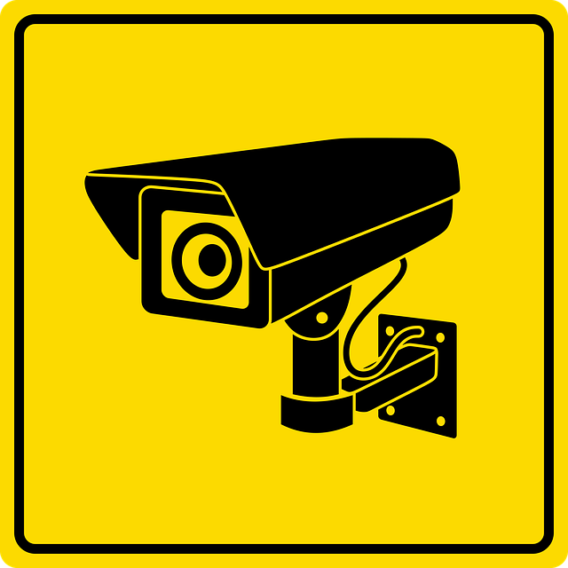

IOT IN SECURITY
Security applications of the Internet of Things:
Security and Surveillance- Role of IoT Technologies in Protecting India
During the past few years, in the area of wireless communication and networking, a new standard named “The Internet
of Things (IoT)” has gained more and more attention in the academia and industry. By embedding short-range mobile
transceivers into a wide array of additional gadgets and everyday items, enabling new forms of communication between
people and things, and between things themselves, IoT has added a new aspect to the world of information and
communication.

For every country security and surveillance has become a key to survival. With rise in terrorism coupled with challenging security conditions, investment in security and surveillance by India is a necessity for survival. In the field of security and surveillance IoT based application can be utilized remotely to see the movement and get warnings when movement is identified. The photographs and recordings are sent straight forward to a cloud server, sent as Gmail Notifications with snapshots and SMS alerts for further action. Accordingly, points of interest such as these make IoT applications perfect for smart security surveillance monitoring wherever security is a big concern. IoT applications are also playing a key role in security equipments which are used for protecting industries, banks, offices, critical installments like Nuclear power stations and other crucial installations.
Take for example network cameras. IoT will allow network cameras to think independently and make smart decisions on their own. Imagine a mesh of network cameras that correspond between each other to alert the next camera of a person or object entering shortly from the left of a given scene.
If we were to rank the top emerging trends, connected systems would still have to be at the top. This is because the capabilities of IP-based systems are constantly evolving and suppliers of all types are still discovering new ways to leverage the power, flexibility and reach of connectivity. As more IP-based security devices inevitably replace aging analog systems, we will see wider use of security products that integrate the growing wealth of information generated by IoT into not just information for security purposes, but a range of other applications and uses.
In the security world the more important aspect of the capabilities of IoT devices is how all the components work together to solves a tangible challenge. First of all, IoT-based security system must be easy to design, install, maintain and use. And one size does not fit all. To maximize the potential of IoT in the security and surveillance field, it requires an in-depth knowledge by suppliers who 1) understand how each feature or component works together, 2) can design a solution that can be used to solve specific challenges, and 3) are able deliver it as an integrated offering whose long-term value has more value than just the sum of its parts.

This is especially true as security solutions evolve over a period of time. Indeed, largely because of IoT, the security sector’s traditional boundaries continue to blur. For example, network cameras can be used for Building Information Management (BIM), Business Intelligence (BI) in retail and even leaping into scientific research with real-time analysis of traffic patterns and crowd movements. The IoT will allow for combined systems integrating previously disparate devices such as video surveillance cameras, smoke detectors, gas sensors, access control panels and other equipment into a common management console providing a single overview across entire buildings and sites.
The result is a huge opportunity for security solutions that are purpose-built to share useful data with other connected devices, all of which can be monitored remotely. This connectivity between devices will provide end users with more complete situational awareness across multiple locations.
As the amount of data being shared and generated over the networks increases there is a growing need to focus on the protection of all this data and assets that exist ‘virtually.’ New technologies and methods are being implemented for enhancing cyber security specifically for networked and cloud-based security systems. This is critical to protect against vulnerabilities such as hacking and will be an important aspect of how physical security and surveillance solutions are designed and implemented. A classic case being the recent global hacking of large corporations by a set of rogue hackers. The companies not only lost millions of dollars to get access to their systems but the overall damage is still being calculated. To prevent such hacks, IoT can play a very crucial role in protecting data and other critical information.
Cloud based computing has touched just about every industry and it will continue to reshape the security and surveillance sector as well. Security can now be offered as a service that is managed remotely, freeing up valuable human and capital resources that no longer to be on site at every location needing to be observed. Secure remote access to security systems will increase in use, including by end users who want the convenience and real-time benefits of being able to monitor property and events without having to be physically present.
Cloud storage is another important aspect of how systems are becoming more efficient in this model. Much larger volumes of data can be stored, cost-effectively and securely, at dedicated server facilities, allowing users to archive video and associated data for longer periods of time and improve its accessibility as well.
Big data is difficult to process through traditional data processing applications. We expect to see more investment in tools and other resources that can effectively mine and derive actionable intelligence from the big data that security systems are producing. This technology can put structure around vast amounts of unstructured video data, helping better understand significant patterns and trends.
On a national perspective, IoT technology is playing a key role as the Indian government fences its border with Pakistan and installs sophisticated security and surveillance equipments. Devices would have built in IoT modules and applications which can talk to one another irrespective of distance and time. Fast communication and action would be critical in protecting our borders from unwanted intruders and terrorists.
In the coming years, there would be greater use of video management systems (VMS) to search big data in order to pull up relevant events, people, locations, times, colors and keywords. Such tools will assist business operators to turn big data into critical information that aids in loss prevention, marketing, operations, and customer service.
IOT PROJECTS IN HEALTH-CARE-